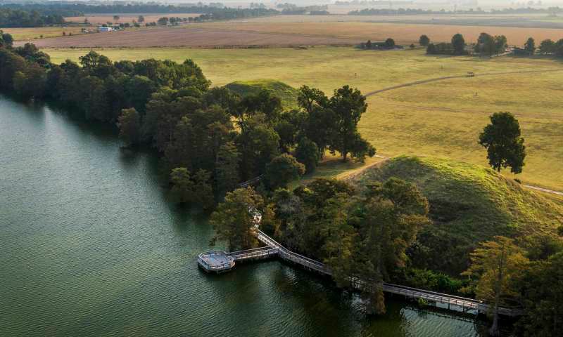

A county archive, built on its newspapers — and its pictures
Lonoke County has been arguing with itself in print since 1873. This repository collects the county's record town by town — Lonoke, Cabot, England, Carlisle, Ward, Austin, Keo, and the smaller communities between them — starting with the newspapers that carried it: The England Democrat, The Carlisle Independent, the Lonoke Democrat lineage, and the Cabot papers.
It works the way its sister site, The Cabot Lore Repository, does: public documents in full where the law allows, honest pointers where it doesn't, and gaps named instead of papered over. The cover photograph above is the Plum Bayou Mounds near Scott — not Cabot — because this county is a lot more than its biggest city.
Search
Search the site's index — newspapers, towns, topics, and all 178 photographs by caption and place.
The Newspapers
Every paper we know of that has served the county, where its archive lives today, and what can actually be read — digitized, on microfilm, or in bound volumes.
The Towns
The county community by community, each with its paper of record and what is collected so far.
Topics
The stories people ask about: the lone oak, Plum Bayou Mounds, Eberts Field, rice, the fish business, railroad towns, and the hard parts too.
Photographs
178 photographs from across the county — Scott, Lonoke, Carlisle, England, Keo, Coy, Ward, Austin, and more — each with its caption and credit.
Contribute
Share a photograph, document, clipping, or memory — or record an oral history with someone who remembers the county that is gone.
Lonoke County at a glance
- April 16, 1873 — Governor Elisha Baxter signs the act creating Lonoke County from parts of Prairie and Pulaski Counties. The county and its seat take their name from a lone oak tree used as a surveying landmark for the Memphis & Little Rock Railroad.
- About AD 650–1050 — The mound-building culture later called Plum Bayou raises the great mounds near present-day Scott — today Plum Bayou Mounds Archeological State Park, a National Historic Landmark.
- 1904 — W. H. Fuller proves rice can be grown profitably on the Grand Prairie; rice, and later soybeans and baitfish, remake the county's economy.
- 1917–1919 — Eberts Field, a World War I aviation training field near Lonoke, trains pilots before closing as the war ends.
- 1928 — The Joe Hogan Fish Hatchery is established at Lonoke; the county becomes the heart of Arkansas's baitfish industry.
- 2020 census — Population 74,015 across 771 square miles: rolling hills in the north (Cabot, Austin, Ward), rice-and-fish prairie in the middle (Lonoke, Carlisle, Humnoke), Delta soil in the south (England, Coy, Allport, Scott, Keo).
At-a-glance facts drawn from the Encyclopedia of Arkansas entry for Lonoke County; each carries its full telling on the Topics page.
Where it stands
Founded November 4, 2026. The newspaper inventory is done, and the photograph collection now stands at 178 pictures gathered from the Encyclopedia of Arkansas, the Library of Congress, and county sources — every one credited, every caption checked against its source. Collection continues with the titles that are already reachable: the Carlisle Independent issues digitized by the Arkansas Digital Newspaper Project, the microfilm runs held by the regional library system, and the England Democrat's own complete back-issue archive. Counts appear here as material is actually collected — never before.